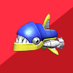
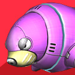
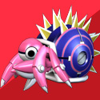
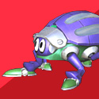
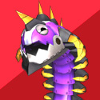
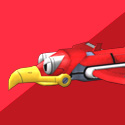

キャラクター
ソニック
世界最速の青いハリネズミ。『エピソードⅠ』の激闘から数ヶ月後、リトルプラネット再接近のニュースと共に、Dr.エッグマンが再び活動を開始したことを耳にしたソニックは、相棒のテイルスと共にトルネード号で隣の大陸へ調査に向かう。
テイルス
『エピソードⅠ』では宇宙へ向かうためのロケットを作り、影のサポート役に徹していたソニックの弟分。
本作では、二本の尻尾を回転させて空を飛ぶ得意の能力を活用しソニックとのタッグアクションで冒険をアシストする。
エッグマン
『エピソードⅠ』でソニックに計画を邪魔された悪の天才科学者。
リトルプラネットが最接近するタイミングにあわせ、沈黙を破る事に。
Dr.エッグマンが密かに企む、その壮大な計画は、静かに、そして確実に第二段階へと移行しようとしていた……
メタルソニック
『ソニック・ザ・ヘッジホッグCD』のスターダストスピードウェイでソニックとの激闘の末に倒されたはずの超高性能ロボット。
Dr.エッグマンの計画により完全復活を果たしたそのボディには、オリジナルを超えるスピードと攻撃能力を備える。
ウリボ
『エピソードI』での研究結果を基にDr.エッグマンが新たに開発したイノシシ型ロボット。
多数のカラーバリエションが存在するが、特に赤色タイプはソニック目掛けて突進する強敵なので要注意。
ピラーナ

メガドライブ版『ソニック2』の「AQUATIC RUIN ZONE」に登場したピラニア型ロボット。その姿はまさに水中に潜むハンター。
ソニックを発見すると、その鋭利なアゴでかみ砕こうと急接近してくる。
シューン
水辺の偵察用に開発されたカワセミ型ロボット。
普段は水面を滞空しているが、水中のソニック達を発見すると、急降下して襲いかかってくる。
ドドン

水中用に新しく開発されたアザラシ型ロボット。
吐き出されるブレスはその周囲を一瞬にして凍らせ、水中で自由のきかないソニックたちの行く手を阻む。
ヤドリン

寒冷地用に新たに開発されたヤドカリ型ロボット。
トゲのついた固い甲羅は、ソニック単体の攻撃を一切寄せ付けない。
何かほかに倒す方法がきっとあるはず……
ベアラ
新たに寒冷地用に開発された白クマ型ロボット。
重量級の体から繰り出す、パワーに任せた攻撃が得意。
またタフなその体は、多少の攻撃ではびくともしない強敵だ。
スカラ

砂漠地帯での迎撃用に開発されたフンコロガシ型ロボット。
無限に生み出される大型の球体は、転がる途中で爆発する。
嫌な場所に必ずいる、やっかいな強敵。
ボーラ
『エピソードⅠ』に登場した「ウニウニ」「ウニダス」をベースに
新たに作られたウニ型ロボットの新型機。
バーナーから噴射される炎にくわえ、油が広がる場所では
その炎が燃え広がることもあるので注意が必要。
ドワーム

砂漠で行動することを前提に設計された巨大ムカデ型ロボット。
その行動は神出鬼没、流砂の中から突然現れる。
どんな攻撃も受け付けない頑丈なボディも要警戒。
バルキーン

メガドライブ版『ソニック２』の「SKY CHASE ZONE」にも登場した
戦闘機タイプのトリ型ロボット。
『エピソードⅡ』ではメタルソニック操る
ウエポンユニット「メタルキャリアー」から大量に射出される。
コケッコー

メガドライブ版『ソニック２』の
「WING FORTRESS ZONE」に登場したニワトリ型ロボット。
『エピソードⅡ』でも超巨大空中要塞「スカイフォートレス」の
あらゆるところに固定砲台として配置され、ソニックたちの前に立ちふさがる。
ドースン
メガドライブ版『ソニック２』の
「SKY CHASE ZONE」にも登場したカメ型ロボット。
メタルソニック操るウエポンユニット「メタルキャリアー」の護衛を務める。
突然視界の外から現れることもあるので警戒が必要だ。